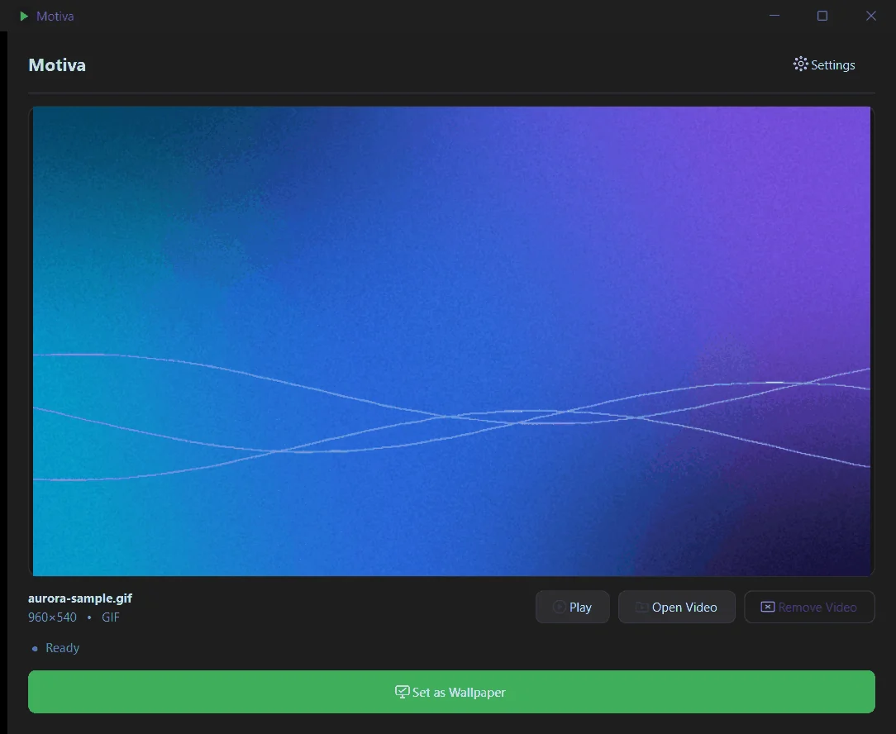
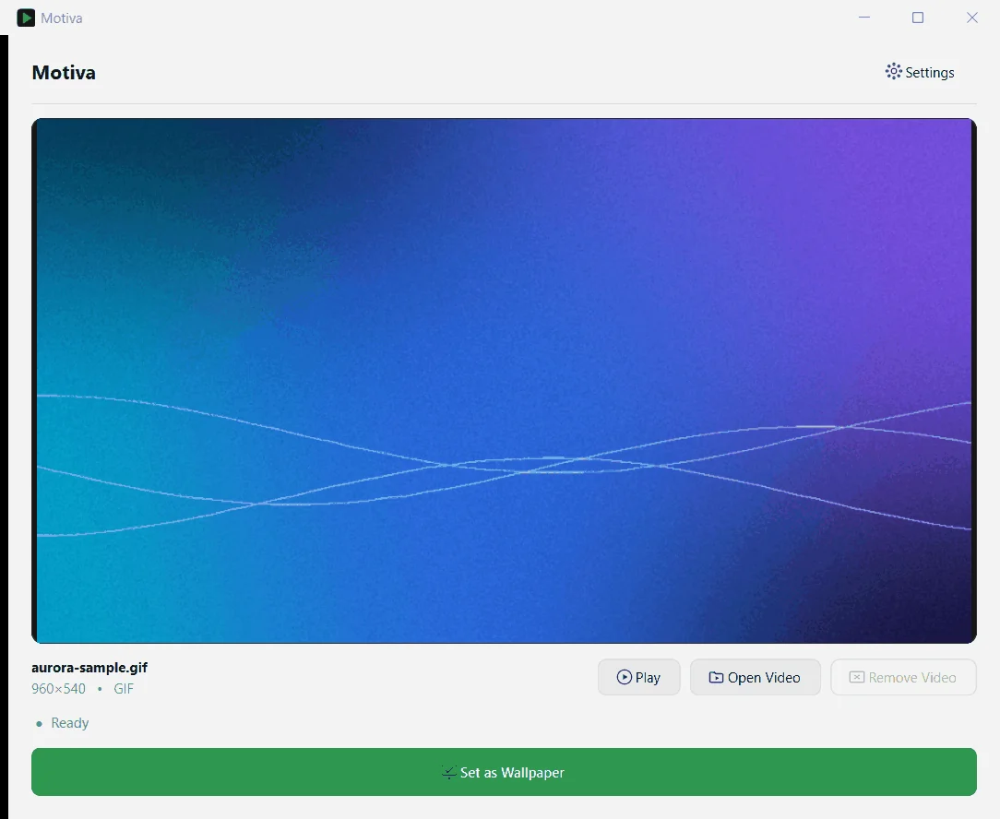
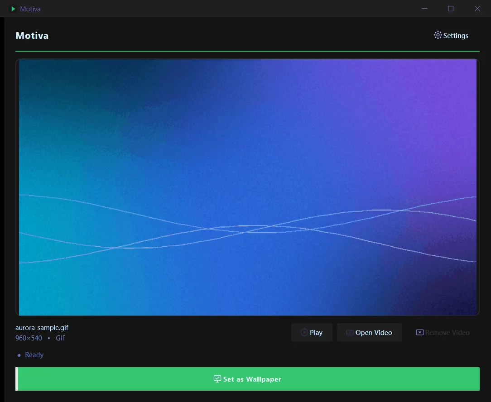
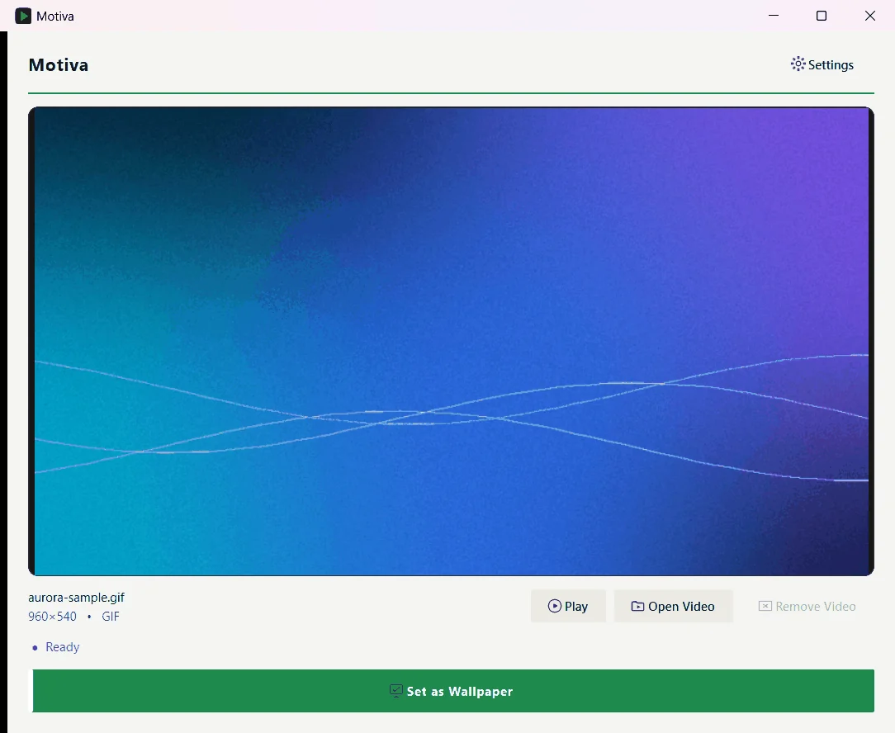
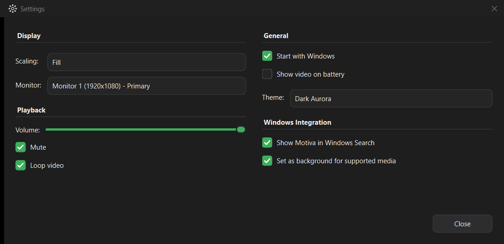

Behind your icons
The wallpaper is attached to the Windows desktop layer, beneath your desktop icons. It is not a topmost or fullscreen window, so the taskbar and your apps stay on top.
Windows video wallpaper
Motiva is a native Windows application that plays videos and GIFs as a live wallpaper, behind your desktop icons — no browser, no fake fullscreen window.

Features
A focused set of features, all built into the current version.
Play a video continuously behind your desktop icons, and pause, mute or loop it from Motiva.
Use an animated GIF as your wallpaper exactly like a video file.
MP4, MKV, MOV, AVI, WMV, OGV and GIF. Video formats depend on the media backend Motiva ships with.
Drop a local video or GIF onto the window, or use Open Video to browse for one.
Paste a direct http(s) link to a video file — or press Ctrl+V in the window.
Optionally add Set as background to the right-click menu of supported media files.
A Show video on battery setting lets you choose whether the video keeps playing on battery power.
Dark Aurora, Light Aurora, Dark Onyx and Light Onyx — switch any time in Settings.
If Windows Explorer restarts, Motiva re-attaches the wallpaper on its own.
Pick a normal picture with Set as desktop background and Motiva steps aside, staying ready in the background.
Use all monitors, the primary one, or a specific one — with Fill, Fit, Stretch or Original scaling.
Add Motiva to the Start Menu so Windows Search finds it, and optionally start it with Windows.
How it works
Drag a video or GIF in, open one, or paste a link.
Motiva plays it in its own window first, with play and pause controls.
One click puts it behind your desktop icons. Remove Wallpaper reverses it.
Motiva lives in the system tray while your desktop moves.
Demo & screenshots
Real screenshots of the app. They show a sample aurora GIF that was generated for these captures — your own media appears in its place.




Native Windows integration
Motiva is a native C++ application using Qt 6 and Win32 — not a browser or a fullscreen overlay.
The wallpaper is attached to the Windows desktop layer, beneath your desktop icons. It is not a topmost or fullscreen window, so the taskbar and your apps stay on top.
Frames are decoded with Qt Multimedia and presented through DirectComposition using Direct3D 11.
Motiva detects Explorer restarts and re-attaches, and hands the desktop back when you choose a regular Windows wallpaper.
For users
Get the latest Motiva release for Windows. Version 1.0.0
Served from the official GitHub Releases page.
MotivaSetup.exe.Uninstall any time from Windows Settings ▸ Apps. Your settings and videos are kept.
For developers
Explore, modify, and extend Motiva from the source.